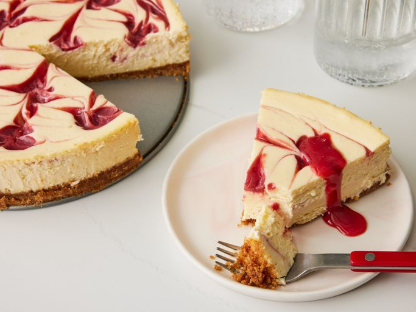

Cheesecake
Home

Description
This strawberry cheesecake recipe is easy, impressive, and the perfect sweet treat to make at home.
Ingredients
- Graham cracker crumbs
- Butter
- White sugar
- Cinnamon
- Frozen Strawberries
- Cornstarch
- Cream cheese
- Sweetened condensed milk
- Lemon juice
- Vanilla extract
- Eggs
Steps to make Cheesecake
- Make the crust and press it into the pan. Chill in the refrigerator.
- Blend the strawberries and cornstarch, then boil the sauce until thick and shiny.
- Make the cream cheese filling with the remaining ingredients.
- Assemble the cheesecake according to the detailed instructions below.
- Bake until the cheesecake is almost set, cool, and refrigerate.
- Serve with the reserved strawberry sauce.